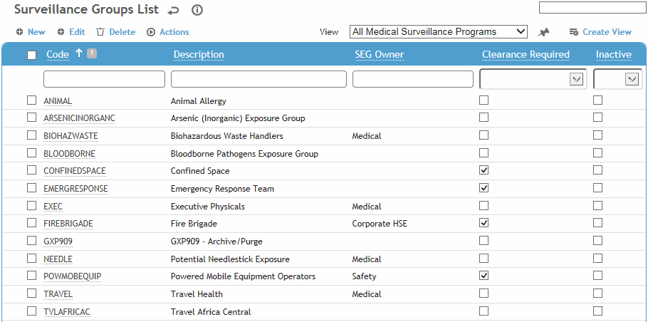
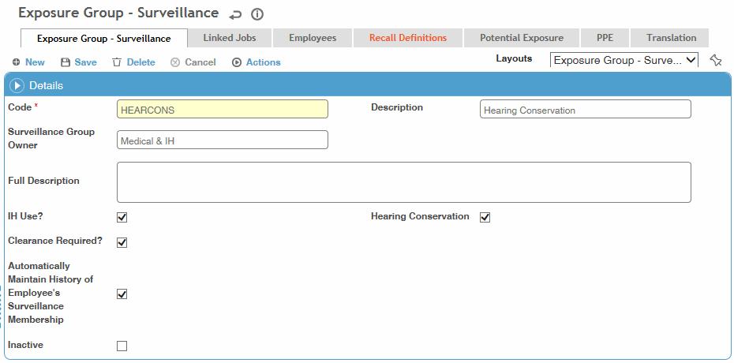
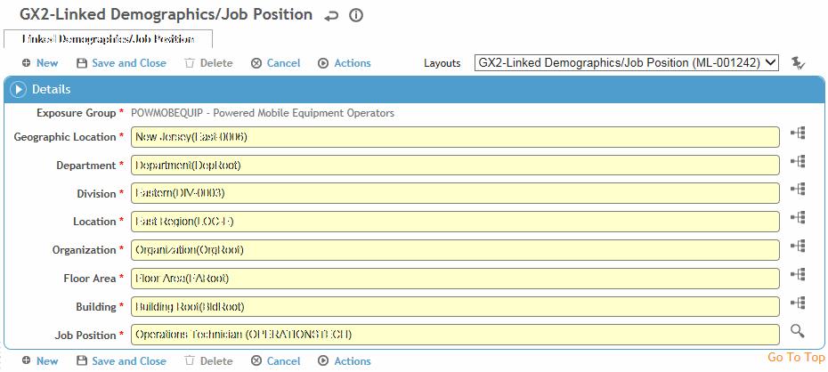
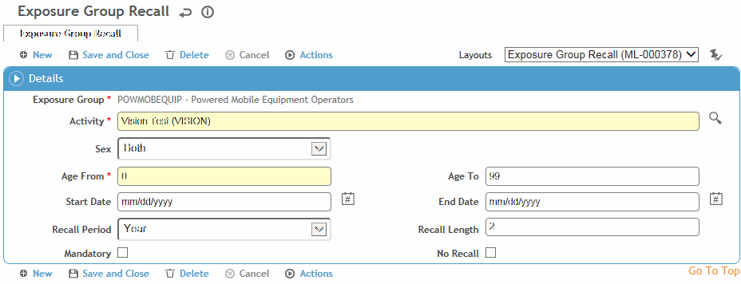
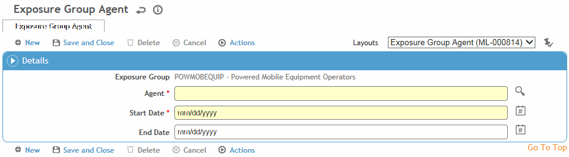
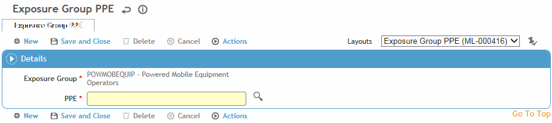

This table contain codes for similar exposure groups (SEG). An SEG is used to group employees who have common surveillance requirements, such as those exposed to the same hazard, those with the same medical surveillance requirements, or those with common training requirements (such as those who require recertification).
When you deactivate an SEG, you are asked if you want to remove any linked jobs and end any associated active employee enrollments so that requirements for inactive SEGs do not continue to display as due for employees.
Medical users use the ExposureGroup table
to create both IH and non-IH exposure groups (the ExposureGroup table
includes an IH Use? checkbox).
IH users use the SimilarExposureGroup table,
and records will automatically be flagged as for IH Use. The SimilarExposureGroup table
includes the ability to link processes and tasks.
For quick access to the ExposureGroup table, choose SEG Management from the Occupational Health menu.
To filter the list of records, enter a few characters in one or more of the fields at the top followed by an asterisk, then press Enter.

To create an SEG that is very similar to an existing one, select the SEG and choose Actions»Clone. You are prompted to enter a new code and description for the clone, and to select which tabs to copy from the existing SEG.
Click a link to edit, or click New.

On the Surveillance Group tab:
Enter the Code
to be used to identify the SEG as well as a short Description.
You can optionally include more detailed information in the Full Description field; this is only
used for reference, it does not appear anywhere else).
In the SEG Owner field, enter the name of the individual or department responsible for creating the SEG, for example, Industrial Hygiene.
If the SEG is used specifically by the Industrial Hygiene module, select the IH Use? checkbox. This filters the SEGs in the Exposure Group field on the IH Air or Noise Samples forms to display only those SEGs that are IH-related (i.e. either created in the SimilarExposureGroup table, or created in the ExposureGroup table with IH Use? selected). For more information, see Working with Surveys and Samples.
If you need to indicate the level of exposure and the agents that the employees are exposed to, complete the IH version of the table instead (SimilarExposureGroup) and complete the Linked Jobs History tab.
Indicate if this SEG should be classified as a Hearing Conservation SEG. While a system setting controls which SEG is used by the Hearing Fit module, this checkbox allows for multiple SEGs to be considered for the Audiometric module.
If Clearance is required for this SEG, select the checkbox. Fields for clearance status and effective/expiration dates will be available on the Exam Activities form of the Clinic Visits module.
If you select Automatically Maintain History of Employee’s Surveillance Membership, all employees belonging to that SEG will be added to the Employees tab when you import employees.
Use the Linked Jobs tab to link job positions to the SEG. Click the job position link or click New to add a new job position.

By default all possible Job Positions are chosen (i.e. “Any (%)”). If you want to select a particular job position, select it.
Select the appropriate GDDLOFB nodes, then click Save.
A Linked Queries tab may be added to custom layouts
that allows you to enroll employees into an exposure group automatically
based on the result of a linked query. The query can be related to
exposure levels, results of lab work, wellness indicators, etc. An
exposure group cannot have both a linked job and a linked query.
For Cority-hosted clients, enrollment is automatic based on a business
rule that is run every Saturday: the BR will check the status of the
exposure groups that use linked queries; if an employee was enrolled
in an exposure group based on the result of a linked query but they
no longer appear in the results of the linked query, their enrollment
in that group will be ended. If an employee is added to the results
of a linked query for one or more exposure groups, an enrollment in
each group will be started for the employee.
Employees can also be enrolled based on the result of a linked query
through the Import Utility or the Data Integration Utility.
Please contact your system administrator for further information.
Use the Employees tab to include or exclude an employee from an SEG or work group.
If Automatically Maintain History of Employee’s Surveillance Membership is selected on the Surveillance Group tab, then during the next data feed from your Human Resources system, employees are automatically added to the Employee tab of the appropriate SEG record, based on their GDDLOFB and job position found within the HR feed.
If the employee is no longer part of the exposure group, the End Date of the existing record is updated with the date of the HR import feed minus one day.
If the employee is new to the exposure group, a record is added with the employee's number and the Start Date equal to the date of the HR import feed.
If you want to maintain any employees you manually added to the SEG (e.g. if they may not match linked job criteria), select the Excluded from Auto-Link checkbox. If not selected, the employee would be removed during the next HR data feed.
To edit an existing employee click the number link, or click New.
Select the employee (if not already selected) and start date. To exclude the employee, select the Exclude check box. If you want the employee to remain in the SEG to receive surveillance even if terminated, select the Recall if Terminated checkbox. (For example, symptomatic employees may need to be kept in an asbestos program after retirement.) Click Save.
In the Linked Jobs and Employees tabs, you are restricted to selecting/viewing records that match your site security.
To define recall activities for the SEG, click New on the Recall Definitions tab.

Before you can associate recalls to an SEG, the recall activities must have been defined in the ScheduleActivity table.
Select the type of recall and which gender the recall applies to (male, female, both).
Enter the age range in the Age From and Age To fields.
Enter the date when this recall starts, and the End Date, if known. The system will not recall for an activity unless the current date is between the start and end date for that recall.
To define the recall gap, enter a number in the Recall Gap field, and then select the period of time in the Recall Period field. For example, for a one-year gap, enter 1 in the Recall Gap field and select Year in the period field.
If the recall is mandatory, select the Mandatory checkbox. If the activity is defined as a group activity (see ScheduleActivity), this checkbox must be selected.
If this recall activity should only occur once (e.g. initial medical exam upon hiring), select the Don’t Recall checkbox. The Recall Gap and Period become disabled.
Click Save.
On the Potential Exposure tab, define agents to which the SEG is exposed. Click an agent link or click New:

Select the agent, and the start and end dates for the exposure.
Click Save.
On the PPE tab, define the Personal Protective Equipment (PPEs) that are required by all employees in the SEG. Click an existing PPE link or click New:

Select the PPE from the list.
Click Save.